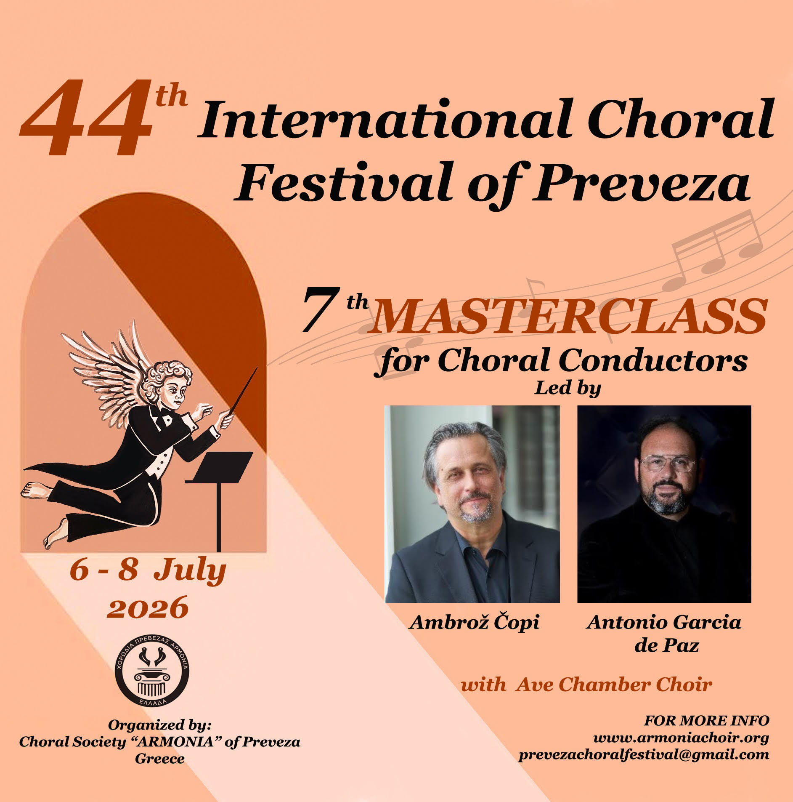

7ο Σεμινάριο & Εργαστήριο Χορωδιακής Διεύθυνσης 2026

Το Διεθνές Χορωδιακό Φεστιβάλ Πρέβεζας προσκαλεί χορωδιακούς μαέστρους σε ένα τριήμερο εντατικό masterclass βασισμένο στην πρακτική πρόβα. Σε συνεργασία με τη Χορωδία Δωματίου Ave, οι συμμετέχοντες θα εργαστούν απευθείας με ένα διακεκριμένο σύνολο, εξερευνώντας τεχνική διεύθυνσης, μουσική ερμηνεία και επικοινωνία σε ένα πρακτικό και εστιασμένο περιβάλλον.
Αυτό το masterclass έχει σχεδιαστεί ως εργαστήριο εργασίας για μαέστρους που επιθυμούν να εμβαθύνουν την καλλιτεχνική και τεχνική τους προσέγγιση.
Το masterclass ολοκληρώνεται με μια τελική συνεδρία εργασίας με τη χορωδία.

Ο Ambrož Čopi έχει σπουδάσει σύνθεση, πιάνο και φωνητική μουσική. Οι
συνθέσεις του έχουν εκδοθεί από τις Astrum, DSS και Sulasol σε
πολυάριθμα CD και έχει κερδίσει πολλά βραβεία για τις
συνθέσεις του σε αρκετούς διαγωνισμούς συνθετών. Έχει τιμηθεί με:
το Βραβείο Νέου Μουσικού (1995) για τις εξαιρετικές
επιδόσεις κατά τη διάρκεια των σπουδών του, το Βραβείο «Prešeren»
του Πανεπιστημίου της Λιουμπλιάνα και το βραβείο του Δήμου
Bovec (1997), το Χρυσό Μετάλλιο του Πανεπιστημίου της Primorska για τα
επιτεύγματα με τη χορωδία APZ UP (2009) και δύο σημαντικά
βραβεία από τον Δήμο Koper (2014), το Μετάλλιο «Gallus»,
το υψηλότερο βραβείο στον τομέα της μουσικής δραστηριότητας σε εθνικό
επίπεδο στη Σλοβενία (2014).
Από το 1999 διδάσκει μουσική στο Καλλιτεχνικό Γυμνάσιο
στο Koper και από το 2010 διευθύνει τη Χορωδία του
Ωδείου Μουσικής και Μπαλέτου Λιουμπλιάνα.
Τα προηγούμενα χρόνια, διηύθυνε επίσης τη Νεανική Μικτή Χορωδία του
Καλλιτεχνικού Γυμνασίου Koper (1999–2002, 2007–2013), τη
Χαμηλόφωνη Ορχήστρα «Vladimir Lovec» (2005–2007), τη Χορωδία Δωματίου
«Iskra», Bovec (1992–2001), τη Χορωδία Δωματίου Nova Gorica (1998–2004),
τη Μικτή Χορωδία «Obala» Koper (1998–2007)
και την Ακαδημαϊκή Χορωδία του Πανεπιστημίου της Primorska (2004–
σήμερα). Με τις χορωδίες του έχει κερδίσει πολλά βραβεία και έχει
αναδειχτεί ως ο καλύτερος μαέστρος σε πολυάριθμους διαγωνισμούς. Καλείται
τακτικά ως μέλος κριτικής επιτροπής σε διάφορες χορωδιακές εκδηλώσεις
και διαγωνισμούς, και συμμετέχει συχνά σε σεμινάρια χορωδιακής μουσικής
στην Ελλάδα και στο εξωτερικό ως εισηγητής.
Ο Marco Antonio García de Paz αποφοίτησε με άριστα στη διεύθυνση χορωδίας από το
Ανώτερο Κέντρο Μουσικής της Χώρας των Βάσκων (Musikene). Ιδρυτής και αρχηγός της χορωδίας El
León de Oro, στα είκοσι δύο χρόνια ύπαρξής της ο García de Paz έχει αναπτύξει μια εκτενή
διεθνή καριέρα με το γκρουπ του, που περιλαμβάνει μεγάλο αριθμό συναυλιών στις ΗΠΑ,
την Αφρική και αρκετές ευρωπαϊκές χώρες, σημαντικά βραβεία και ηχογραφήσεις με εξέχουσες
δισκογραφικές εταιρείες.
Σήμερα, ο García de Paz συμμετέχει επίσης ως κριτής στους σημαντικότερους διαγωνισμούς
χορωδιακού τραγουδιού στην Ισπανία και την Ευρώπη. Επιπλέον, δίνει masterclasses και
εργαστήρια για τη διεύθυνση χορωδίας και το «ανοικτό τραγούδι» τόσο σε εθνικό όσο και
διεθνές επίπεδο, σε πολλές ευρωπαϊκές χώρες. Το 2015 προσκλήθηκε να διευθύνει τη Χορωδία
της Ισπανικής Ραδιοτηλεόρασης (OCRTVE) σε συναυλία στο Μνημειώδες Θέατρο της Μαδρίτης,
η οποία μεταδόθηκε ζωντανά από το Radio Clásica του Radio Nacional de España.
Κατά τη διάρκεια αυτού του έτους έχει εργαστεί με άλλες επαγγελματικές χορωδίες της χώρας
του, όπως η Χορωδία της Κοινότητας της Μαδρίτης (ORCAM) και η Εθνική Χορωδία της Ισπανίας
(CNE). Είναι κύριος προσκεκλημένος μαέστρος της Νεανικής Χορωδίας της Ανδαλουσίας (JCA).
Τα άμεσα σχέδιά του περιλαμβάνουν δεσμεύσεις στην Ισπανία, Ιταλία, Γαλλία, Βουλγαρία και
Ελλάδα.